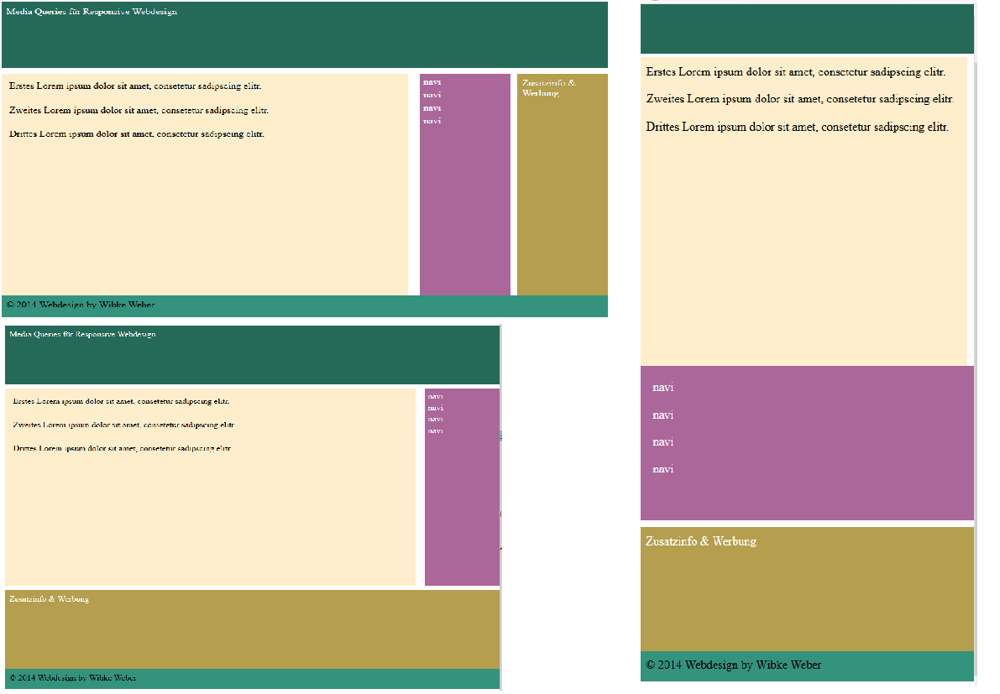

Media Queries¶
{kind=link}
Media Queries fragen Eigenschaften des Monitors ab, um sowohl mobilen Geräten als auch großen Desktop-Monitoren entgegenzukommen. Media Queries kombinieren CSS-Eigenschaften mit logischen Abfragen nach Eigenschaften von Geräten.
CSS @media-Regeln legen je nach Höhe, Breite oder Orientierung (Portrait oder Landscape) des Viewports unterschiedliche CSS-Eigenschaften für Gerätetpyen fest.
Monitorgröße ?¶
Die modernen Browser (ab IE9) verstehen Abfragen (Queries) nach der Größe, der Ausrichtung und Auflösung des Monitors oder Browserfensters.
/** Zuerst kleine Monitore **/
.topmenu li {
width: 48%;
box-sizing: border-box;
text-align: center;
}
/** Größere Monitore **/
@media only screen and (min-width: 600px) {
.topmenu li {
width: 32%;
}
}
Die grundlegende Vorgehensweise im Design ist heute, dass Webseiten zunächst für kleine Displaygrößen erstellt werden (mobile first). Anschließend werden per media-queries die Anzeige für größere Viewports erstellt.
Media-Regel und Breakpoints¶
Eine @media-Regel legt einen Breakpoint fest – ein Bruchpunkt oder eine Bedingung, an dem sich das Layout ändert, um sich besser an eine Geräteklasse anzupassen. CSS-Eigenschaften, die nicht innerhalb einer @media-Regel stehen, gelten für alle Geräteklassen und zielen in erster Linie auf die kleinsten Geräte (zumeist auf Smartphones) ab. Von hier aus legen weitere Breakpoints die CSS-Eigenschaften für größere Viewports fest.
Media Queries überschreiben nur die Eigenschaften, die sich bei einem Breakpoint ändern oder neu hinzukommen.
Ein responsives Design passt sich nicht nur an die Monitore von Smartphones an, sondern bringt für unterschiedliche Browserfenster (Viewports) ein abgestimmtes Design: Mehrwert für große Monitore und ein kompaktes Design für kleine Browserfenster.
Media Queries können an jeder beliebigen Stelle stehen, an der normale CSS-Regeln notiert werden (außer in inline-Stilen):
Im Kopf der HTML-Datei in einem style-Tag,
als externe CSS-Datei, die mit einem link-Tag im head der Seite geladen wird,
an jeder Stelle in der regulären CSS-Datei.
<html>
<!-- Style-Datei wird in Abhängigkeit vom Medientyp geladen -->
<link rel="stylesheet" href="desktop.css" type="text/css"
media = "[ not | only ] screen [ and ] (expression)" />
<link rel="stylesheet" media="all" href="cssbase.css" />
<link rel="stylesheet" media="(min-width: 672px)" href="csswide.css" />
<link rel="stylesheet" media="(orientation:landscape)" href="landscape.css">
<!-- im Style-Tag des html-heads -->
<style type="text/css" media="screen">
@media only screen and (device-width:768px) and (orientation:portrait) {
nav { display:none;}
… Stile für Viewports mit 768px Breite Hochkant
}
body { width: 980px; margin: 0; padding: 0; }
</style>
Media Queries in der CSS-Datei¶
Um den Overhead durch das Laden mehrerer CSS-Dateien zu sparen (jede CSS-Datei benötigt einen HTTP-Request), können die CSS-Eigenschaften für Geräteklassen auch innerhalb der Haupt-CSS-Datei mit @media-Regeln geladen werden.
Diese Media Queries legen drei Layout-Typen für unterschiedliche Geräte fest.
body { min-width: 920px; background: lavender; width: 920px; margin-left: auto; margin-right: auto; }
@media only screen and (max-width:599px) {
body {
width: 320px; font-size: 0.8em;
}
}
@media only screen and (min-width:600px) (max-width:920px){
body { width: 90%;
}
}
Im Grunde können die die Media Queries direkt hinter jedem Stil sitzen, der für die Geräteklasse überschrieben werden soll. Das wirkt schnell unübersichtlicht. Effizienter ist es, die Medie Queries in Gruppen zu bündeln.
Der Viewport der mobilen Geräte¶
Viele mobile Geräte tun nur so, als wäre ihre Breite 980 Pixel. So z.B. das iPhone – das eine physikalische Auflösung von 640x960 hat, aber in der Media Querie behauptet, es hätte 320x480 Pixel. Tatsächlich aber zoomen die mobilen Geräte die Seite nur aus: Sie verkleinern die Seite, bis ihre Breite vollständig in den kleinen Monitor passt. So hat der Benutzer beim Laden die Seite vollständig im Überblick.
Der Viewport der mobilen Geräte ist meistens größer als der Screen. Hier zwingt das HTML Meta-Tag mit name=”viewport” den Viewport auf Screengröße.
<meta name="viewport" content="width=device-width, initial-scale=1.0">
width=device-width heißt “Nicht zoomen!”. Der Rest ist optional.
- <meta name=”viewport” content=”width=device-width,
initial-scale=1.0, maximum-scale=1.0, user-scalable=no”>
meta name="viewport" content="width=device-width" setzt die Breite des Screen bei mobilen Geräten auf die tatsächliche Auflösung in der Breite.
Meta content="viewport" setzt die Breite auf die tatsächliche Breite. initial-scale verhindert das Zoomen beim Laden der Seite. Am Ende verhindert user-scalable="no", dass der Benutzer die Seite vergrößert oder verkleinert.